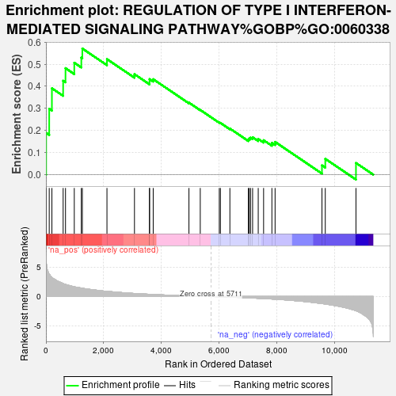
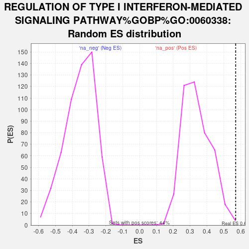

| | | Dataset | deg_ms |
| Phenotype | NoPhenotypeAvailable |
| Upregulated in class | na_pos |
| GeneSet | REGULATION OF TYPE I INTERFERON-MEDIATED SIGNALING PATHWAY%GOBP%GO:0060338 |
| Enrichment Score (ES) | 0.5707125 |
| Normalized Enrichment Score (NES) | 1.6866966 |
| Nominal p-value | 0.006818182 |
| FDR q-value | 0.7026078 |
| FWER p-Value | 1.0 |
Table: GSEA Results Summary

Fig 1: Enrichment plot: REGULATION OF TYPE I INTERFERON-MEDIATED SIGNALING PATHWAY%GOBP%GO:0060338
Profile of the Running ES Score & Positions of GeneSet Members on the Rank Ordered List

Fig 2: REGULATION OF TYPE I INTERFERON-MEDIATED SIGNALING PATHWAY%GOBP%GO:0060338: Random ES distribution
Gene set null distribution of ES for REGULATION OF TYPE I INTERFERON-MEDIATED SIGNALING PATHWAY%GOBP%GO:0060338